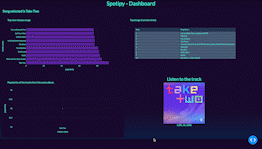

*
There is freedom waitiing for you, on the breezes of the sky,
and you ask "What if I fall?",
oh but my darling,
What if you FLY?
- Eric Hanson
Work Portfolio
A collection of my work, showcasing my expertise in data science, coding, and problem-solving.
This portfolio is a glimpse into the projects I have undertaken, highlighting the diverse range of techniques and tools I have utilized to clean, analyze and interpret data.
Let's unlock the potential of data together!
Python, Web Scraping, BARD, Streamlit, LLM

Developed a Web App that would generate cover letter based on the resume and job description using BARD by Google.
Python, Pyspark, Web Scraping

Developed a Machine Learning model to best predict the final grid position after a Formula-1 Grand Prix race.
Python, Airflow, AWS, Docker, Dash, Plotly.js

Implemented an end-to-end solution involving Airflow for ETL pipeline development, extracting data from Spotify API, storing it in AWS S3, and utilizing Dash to create an interactive dashboard for data analysis and visualization.
Python, Pytorch, SNNtorch
Developed and evaluated a Spiking Neural Network model to classify faces with face-masks, achieving an accuracy of 91.13% on a dataset of 12,000 images.
Python, Dash, Plotly.js, Flask, Heroku
Utilized Natural Language Processing to analyze gamer reviews and identify factors influencing their preferences, including psychological impacts, using data visualization and dashboard creation.
Flask, MySQL, MS SQL Server, MongoDB, Python, AWS
Developed a user-friendly interface to efficiently query 2.3 billion records from diverse databases, including MongoDB, AWS RedShift, MySQL, and MS SQL Server, by seamlessly converting MySQL queries to MongoDB queries using the PyODBC package.
Implemented a machine learning model to accurately detect the Big-5 Personality Traits from users' social media statuses, achieving high accuracy, precision, and recall scores through 10-fold cross-validation.

Utilized R language and Natural Language Processing techniques to extract emotions from Amazon product reviews, visually displaying the most frequent words and their corresponding emotions.
Developed two algorithms, Rule-based and Probability-based, to match Electronic Dental Records (EDR) with Electronic Medical Records (EMR) of patients.
Utilizing electronic dental records (EDR) and Machine Learning algorithms to predict Dental Caries disease.

Review of 11 research works focusing on the detection of mental health problems caused by online social networks using data mining techniques.